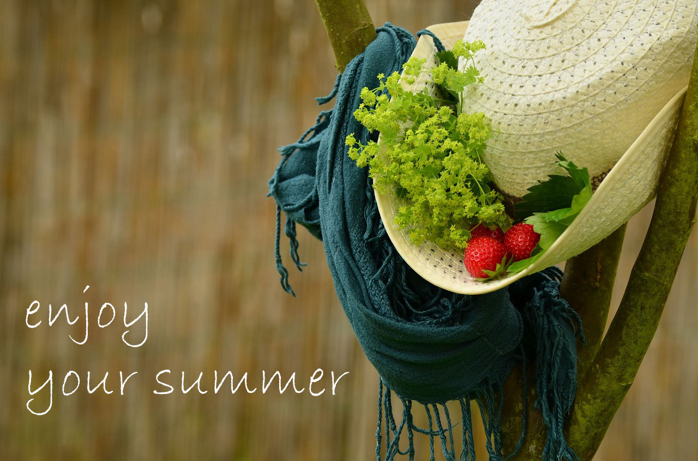
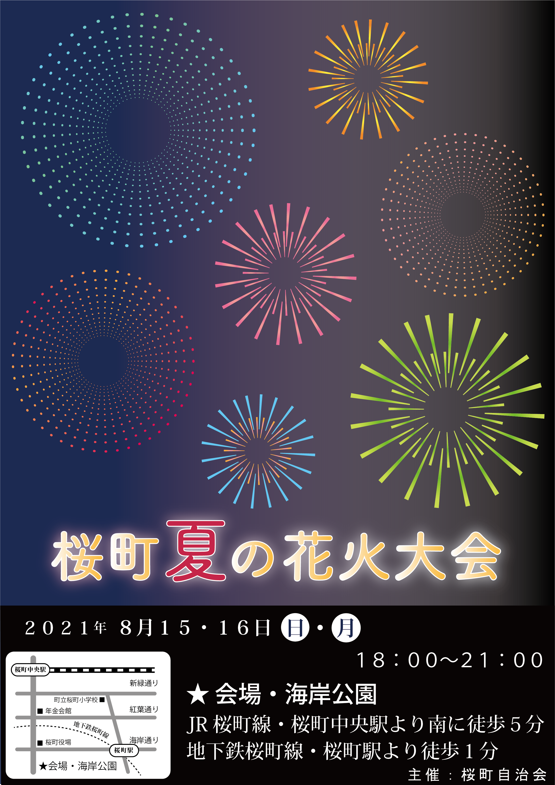

ポートフォリオ集
ランディングページ（架空の女性向けアパレル企業）のポートフォリオです。
↓以下のリンクから閲覧出来ます↓
Photoshopのポートフォリオです。
Photoshopの学習終了時の課題、写真を近未来風に加工した2枚
同じ写真を2枚重ねて、前面のレイヤーの一部をたくさん細くスライドしてずらし、フィルター機能でノイジーに加工。
そこに凹凸で作った文字を重ねて、文字が見えるようにグラデーションをかける。という手法を使用。
加工例を集めた本から抜粋して、この作品を選んで作成しました。


架空のランディングページ用にフリー素材に文字を追加
商品イメージにPhotoshopで文字を追加するという課題で作成したものです。
沢山作った内の一部を載せています。どれも結局サイトでは使用しなかったものですが・・・。



架空のランディングページに使用した商品イメージ画像
最終的にこのデザインに辿り着き、花の種類を2種類作ってみましたが、
今は、上の方（ローズではない方）の画像を使用しています。
花の色は苺から、Enjoyの"y"の色は帽子の飾りから採取して合わせました。

ランディングページのバナー画像
Photoshopで、フリー素材の加工（画像反転・貝殻の移動・移動後に周囲を馴染ませる・文字入れ・
カラーグラデーションの追加など）をしました。

illustratorのポートフォリオです
illustrator学習前に作成したひまわりのイラスト
Photoshopを先に学習し、その終了課題として課されたランディングページのバナー作成。
以前、職業訓練所などで少しillustratorを使用したことがあるので、バナーの素材に
illustratorで何か作れないかと、バナーのデザインが決まる前に作りました。
illustratorの学習中に教材の課題を模写したもの
学習に使った教材は、途中まで出来ている状態からの出題でした。
その後別の課題を遂行中にillustratorに不具合が出たので、調べてもらっている待ち時間に
作成方法を覚えているか、試しにゼロから作ったので載せてみました。
課題・ポスター作製
illustrator終了時の課題は、ポストカード・名刺・ポスターなどの
いずれかをデザインして作成することでした。
夏だったので花火大会のポスターを作成、指導員から「地図などの背景に黒を入れるように、
また、空は写真かグラデーションを入れるようにとアドバイスがあり、完成しました。
追記：ポスター改良版
指導員より、以下の部分を修正するようにと、その後追加の指示があり、いくつか修正しました。
【１】地図を角丸にすること。【２】曜日の位置が下に落ちているので上げること。
【３】主催者情報を入れること。【４】花火が赤系統が下に集中しているので配置を変更すること。
